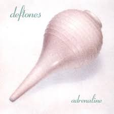
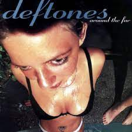
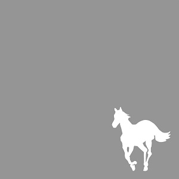
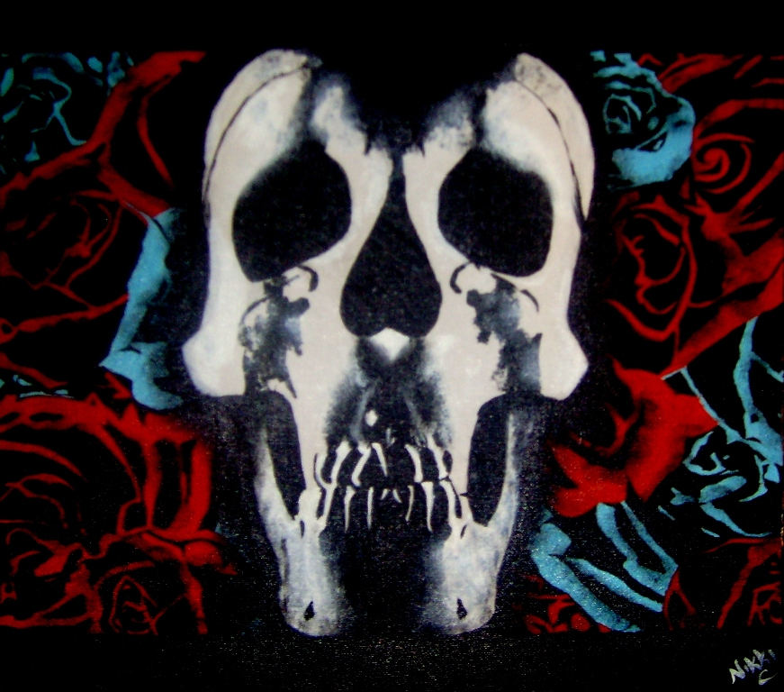
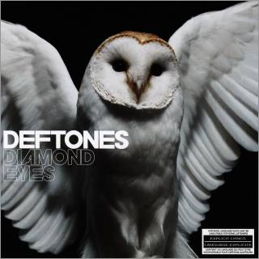
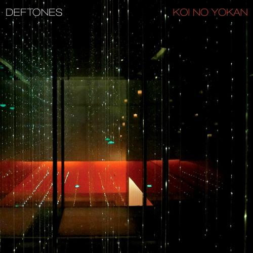
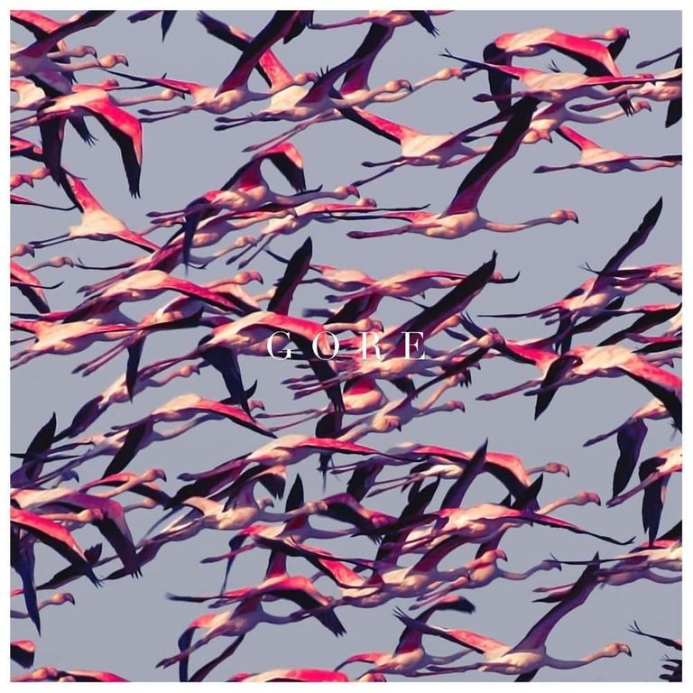

Deftones
Deftones is an American alternative metal band formed in Sacramento, California in 1988. They were formed by Chino Moreno (vocals, rhythm guitar), Stephen Carpenter (guitar), Abe Cunningham (drums), and Dominic Garcia (bass). During their first five years, the band's lineup changed several times, but stabilized in 1993 when Cunningham rejoined after his departure in 1990; by this time, Chi Cheng was bassist. The lineup remained stable for fifteen years, with the exception of keyboardist and turntablist Frank Delgado being added in 1999. The band's experimental nature has led some critics to describe them as "the Radiohead of metal".
Deftones have released nine albums since their inception. After the lineup settled in 1993, the band secured a recording contract with Maverick Records, and subsequently released their debut album Adrenaline in 1995. Promoting the album by touring exhaustively with other bands in the scene, Deftones managed to gain a dedicated fan base through word of mouth. Their second album Around the Fur was released in 1997, reached chart positions along with its singles, and became the band's first to receive certification from the RIAA. The band found even further success with their third album White Pony (2000), which saw a transition away from their earlier, more aggressive sound into a more experimental direction. Its lead single "Change (In the House of Flies)" is the band's most commercially successful single, and the track "Elite" won a Grammy Award for Best Metal Performance; it was also the band's first of three albums to be certified platinum in the United States. Their self-titled fourth album was released in 2003. While the group's critical success continued, sales proved to be lackluster compared to White Pony.
 Adrenaline (1995)  Around The Fur (1997)  White Pony (2000)  Deftones (2003)  Diamond Eyes (2010)  Koi No Yokan (2012)  Gore (2016) Ohms (2020)